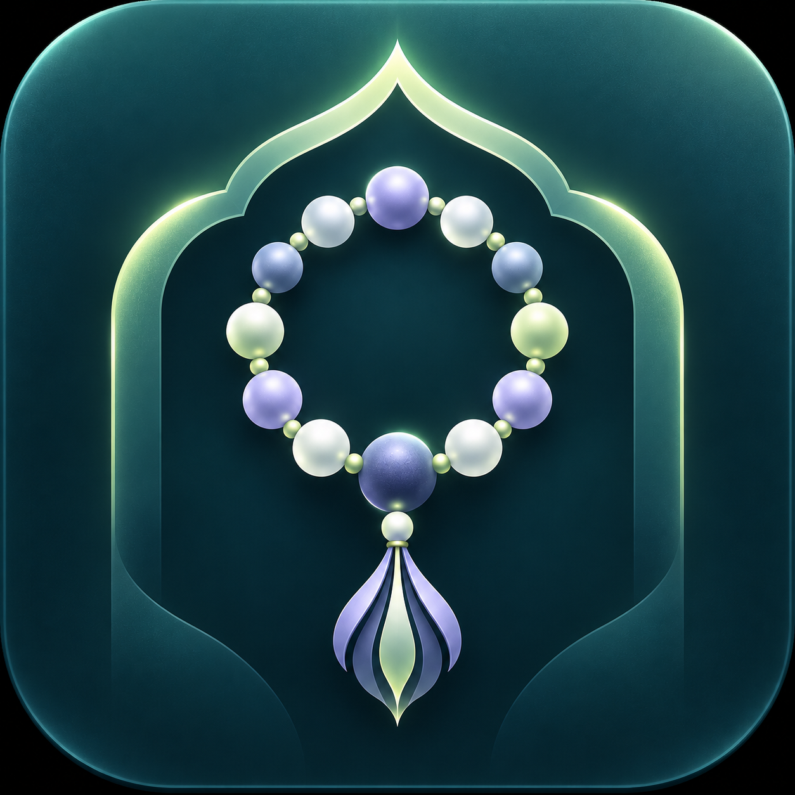
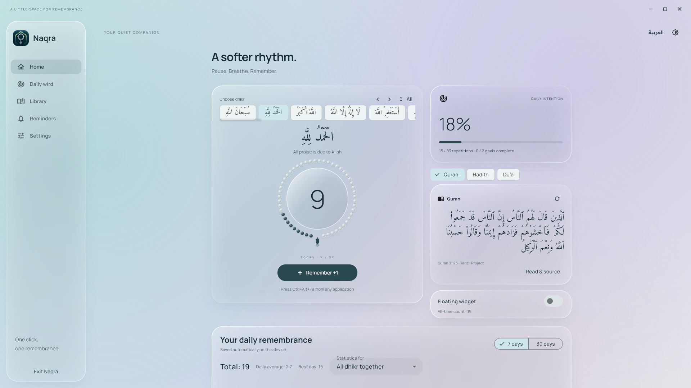

Your desktop. A little calmer.
Keep your place. Keep your flow.
A compact floating counter stays close. Choose your dhikr, set your own daily goals, and count with a tap or your keyboard shortcut.

NaqraنقرةYOUR QUIET WINDOWS COMPANION
Between the work, the tabs, the everyday.
A gentle nudge to pause. Breathe. Remember.
For Windows · Arabic & English · No account needed

3D Monitor pc · Marco De Simone · CC BY 4.0 · Screen texture replaced with Naqra captures
MADE TO LIVE BESIDE YOUR DAY
A compact floating counter stays close. Choose your dhikr, set your own daily goals, and count with a tap or your keyboard shortcut.
See the next salah at a glance. Schedule reminders before, at, or after prayer time. Choose a local athan recording, or keep things silent.
WORDS TO COME BACK TO
Quran, hadith and duaa in small, passing moments. Browse the library, save your favorites, and make reminders your own.
أَلَا بِذِكْرِ اللَّهِ تَطْمَئِنُّ الْقُلُوبُTry a tap. Watch one bead fill.
YOUR OWN PACE
Build a daily wird that fits you. See each dhikr’s progress and your combined history. Your counts are saved locally on your computer.
BEFORE YOU BEGIN
Yes. Closing the main window leaves Naqra running in the Windows system tray. Floating widgets and enabled reminders keep working. Choosing Exit Naqra stops the app and its reminders. Your computer must be awake.
Choose reminder categories and timing, use quiet hours, or pause everything for an hour, a day, or until you resume. Athan can be muted.
Set your location and time zone in Naqra, then choose the calculation method used in your area. Check the results against your local mosque before relying on reminders.
A 64-bit Windows computer. Download the portable ZIP, extract the entire folder, and run naqra.exe. Keep its supporting files together. This version is for Windows; there is no mobile download.
A SOFTER RHYTHM STARTS HERE
For your desktop. For your daily remembrance.
Download for WindowsPortable ZIP · Windows x64 · Version 1.8.0